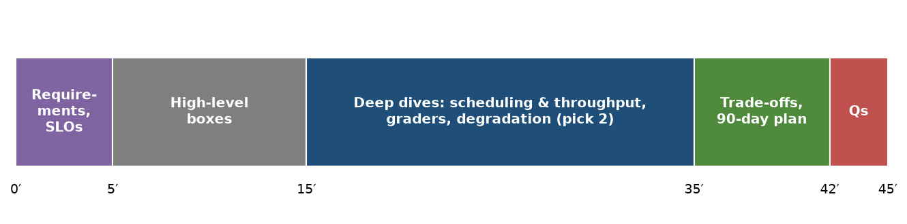

Eval study notes · Coding practice set
The most likely design question for an eval platform role is some version of “design the evaluation platform for a lab training frontier models”. Chapters 1 to 5 contain every piece of the answer; this chapter puts them in the order you would actually say them in a 45-minute design interview, so that the structure is rehearsed and you can spend the interview on judgement rather than on remembering what comes next.
Strong design answers start by asking who the users are and what decisions they make, because that sets every later trade-off. For an eval platform the questions are: which teams consume results (pretraining, post-training and RL, release, product); how many checkpoints per day and of what model sizes; how many benchmarks and of what types (likelihood, generative, code execution, judge-graded, agentic, human); what freshness each tier needs; how much GPU capacity is dedicated versus borrowed; and what reproducibility contract researchers expect.
Then state assumptions out loud if the interviewer does not supply them. A reasonable set: two or three concurrent large runs writing checkpoints every one to two hours, hundreds of small ablation runs per week, around 100 benchmarks in three tiers, from a cheap likelihood suite that must keep pace with checkpoints, through a generative suite for post-training checkpoints, to a full promotion suite with agentic and judge-graded tasks. Name the service-level objectives per tier, for example in-training suite results within one hour of a checkpoint and the full suite within a working day. Saying “the SLO is checkpoint-to-dashboard latency per tier” early signals that you think about the platform as a production service.
Draw the boxes from Chapter 2 and walk left to right. Versioned problem sets with stable item ids and metadata. Benchmark configs as validated, hashed data. An eval orchestrator that subscribes to checkpoint events from training (or is called by the training job’s hooks), expands a checkpoint into the set of eval jobs its tier requires, and submits them to the scheduler with priorities. Inference workers that load a checkpoint once and serve many benchmarks against it. A grader pool separated from generation: CPU workers for extraction and matching, a sandbox fleet for code and agent tasks, and a judge service with pinned judge models. A generation cache keyed by request hash. A per-item results store with full lineage. An analysis layer that computes intervals, paired comparisons and corrected significance, and serves dashboards, alerts and notebook access.
Keep this part brisk. The interviewer wants to see that you know the components exist; the marks are in the deep dives.
Offer two or three deep dives and let the interviewer pick, but be ready to drive if they do not. For an eval platform role the three with the most signal are scheduling and throughput, grader reliability, and detecting degradation.
For scheduling and throughput, cover where time goes (start-up, prefill, decode, long tail, grading) and the fixes from Chapter 4: one model load per checkpoint across many benchmarks, saturating continuous batching, prefix caching for few-shot prompts, replicas over tensor parallelism for throughput, longest-first ordering and length caps with truncation recorded, streaming to graders, and generation caching. Then the cluster policy: tiers mapped to priorities, preemptible jobs that resume from per-item progress, fair share between teams, and a quick back-of-envelope sizing for the generative tier.
For grader reliability, the five habits from Chapter 3: version graders and record the version per result; unit-test extractors and judges on real hard cases; separate infrastructure errors from wrong answers; run known-answer canaries and gold solutions; and re-grade stored generations before rolling out a grader change. Mention that in RL the same graders compute rewards, so their bugs become reward hacking, and that judge graders need calibration sets with human labels and tracked agreement.
For degradation, the detector set from Chapter 5: a pinned reference model through the same pipeline, per-run health metrics (completion, error, truncation and extraction-failure rates), noise-aware anomaly detection with multiple-comparison discipline, and lineage diffs, with the triage order completeness, lineage, reference model, statistics, model.
Weave in the statistics where they change a design decision, not as a lecture. Per-item storage exists because paired tests need it. Benchmark tiers exist partly because small benchmarks cannot detect small effects, so they belong in trend-spotting, not promotion decisions. The dashboard shows intervals and corrected significance because forty uncorrected cells guarantee false alarms.

Close with the decisions you would revisit and why, because this is where principal-level judgement shows. Dedicated eval capacity versus borrowed capacity, and how you would measure which is cheaper given idle time and preemption cost. Building on an open framework (lm-evaluation-harness, Inspect) versus an internal one: open frameworks give researchers familiar task definitions and community benchmarks, internal ones give control over scheduling, lineage and scale; a common pattern is internal orchestration and storage with adapters that run open-framework task definitions. Determinism versus throughput: batch-invariant kernels make greedy decoding reproducible at some speed cost, and the right choice may differ between the promotion tier and the trend-spotting tier. Breadth of benchmarks versus statistical power on each. And a sequencing plan: what you would build in the first ninety days (lineage, per-item storage and a reference-model canary are high-value and cheap) versus later (IRT-selected subsets, automated contamination checks, a benchmark-health dashboard).
Run the design interview as requirements (consumers, decisions, tiers, SLOs), high-level boxes, two or three deep dives chosen for the role (scheduling and throughput, grader reliability, degradation detection), then trade-offs and a ninety-day plan. Use the statistics only where they change a design decision.